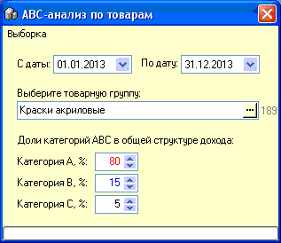
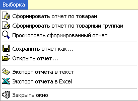
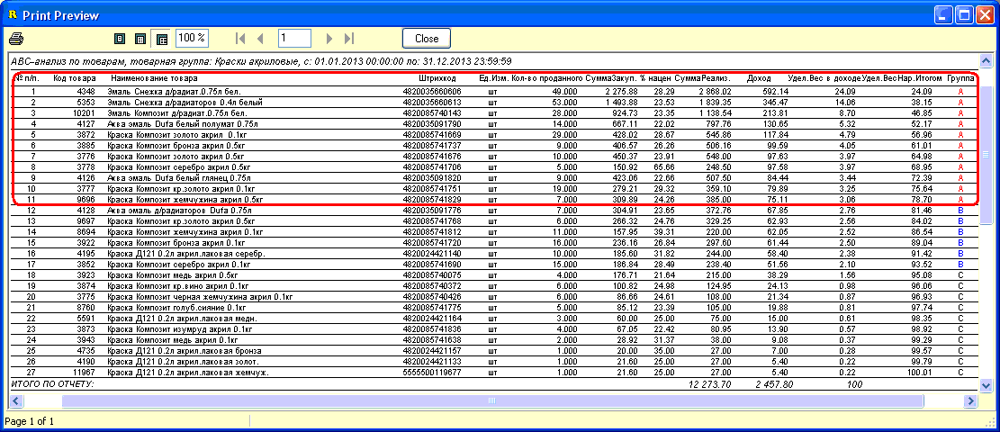

ABC-анализ - метод, позволяющий
классифицировать ресурсы фирмы по степени их важности. Этот анализ является
одним из методов рационализации и может применяться в сфере деятельности
любого предприятия. В его основе лежит принцип Парето — 20% всех товаров дают
80% оборота/дохода.
ABC-анализ - анализ товарных запасов путём
деления на три категории (значения по умолчанию, можете изменить их согласно
своего взгляда на вопрос ранжирования удельного веса в доходе, однако общая
сумма должна составлять 100%):
А — наиболее ценные, 20% — ассортимента; 80% —
продаж; В — промежуточные, 30% —
ассортимента; 15% — продаж; С — наименее ценные, 50% — ассортимента; 5% —
продаж;
На основе этих данных менеджеры магазина могут
принимать решения о целесообразности выведения из ассортимента наименее
ценных товаров, которые только занимают полки и оттягивают на себя оборотные
средства. Также эти результаты могут служить аргументами в вопросе общения с
поставщиками магазина, торговыми представителями, обычно как раз пытающимися
предложить магазину товары категории С.
На рисунках ниже изображена форма выбора
параметров отчета и ее главное меню:
 
В главном меню можно сформировать отчет как по
конкретно выбранной товарной группе, так и по всем группам сразу.
Пункт меню "Просмотреть сформированный отчет"
позволяет открыть уже отобранные данные, если случайно закрыли отчет, а не
хочется ждать отбора данных сначала.
Отобранные данные/отчет можно сохранить и затем
открыть используя соответствующие пункты меню. Программа попросит указать
каталог и имя файла. Используются файлы с расширением *.xml
При желании можно экспортировать отчет в
текстовый формат или в Excel.
На рисунке внизу показан предварительный просмотр
отчета, отобранного по параметрам, указанным выше:

Красным прямоугольником обведены товары наиболее
ценные для магазина (категория А).